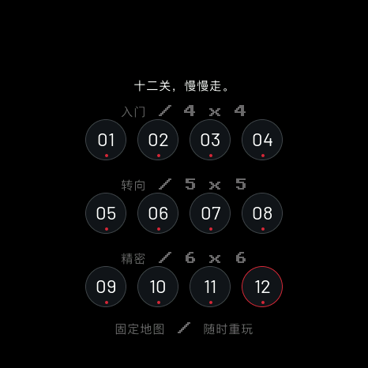
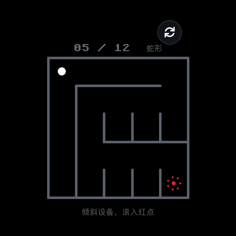
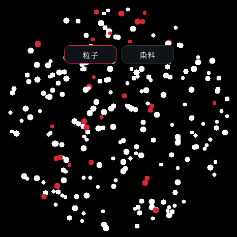
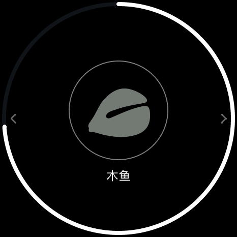

<!doctype html><html lang="zh-CN"><meta charset="utf-8"><meta name="viewport" content="width=1080"><title>迷宫流体木鱼</title><link rel="stylesheet" href="style.css">
    <main class="poster four" data-number="15"><header><div class="brand">soRound OS <span>明天 · 正式版见</span></div><div class="kicker">14 / 熟悉的玩法，也继续打磨</div><h1>认真玩，<br>也认真解压。</h1><p class="sub">三章十二关迷宫、重力粒子，还有新的敲击反馈。</p></header><div class="content"><div class="duo"><figure class=""><figcaption>迷宫 · 自由选关</figcaption></figure><figure class=""><figcaption>固定关卡 · 重力滚球</figcaption></figure></div><div class="duo"><figure class=""><figcaption>粒子流体 · 随倾斜流动</figcaption></figure><figure class=""><figcaption>木鱼 · 敲击虚影</figcaption></figure></div></div><footer><span>原生 UI 渲染 · 保留粒子流体玩法</span><span>15 / 10.23</span></footer></main></html>